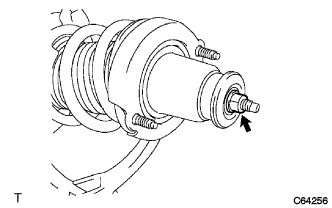

Rear shock absorber W/coil spring (4WD) decomposition |
| 1. Shock absorber ASSY RR LH removed |
Make the SST the most wider of the hook and attach it to the coil spring.
Concentrate the coil spring sufficiently.
|  |
Fix the two -sided width at the top of the piston rod and remove the nut.
Remove the Rear Shock Absorb Cushion No.1 LH, the rear suspension support Assisting Assy LH, the rear spring vampa and the rear coil spring LH.